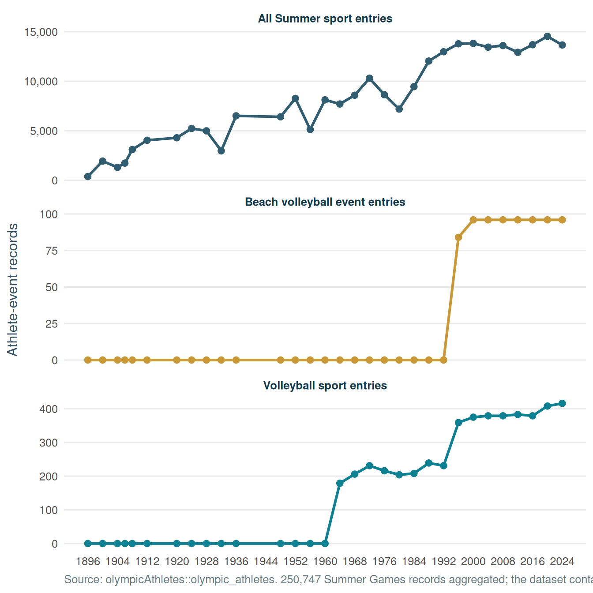

All 48 beach-volleyball team medals, one point per podium team. Source: olympicAthletes through 2016 and official Olympic results for 2020 and 2024.
Olympic Trends
Every team medal, from Atlanta to Paris
Each point is one medal-winning country-team. Compare the men’s and women’s podiums across all eight Games; hover for the country, team, year, and medal.
Sources: olympicAthletes through 2016 and official Olympic results for Tokyo 2020 and Paris 2024. Each point is one of the 48 team-medal results.
There are only 48 distinct Olympic beach-volleyball team medals across eight editions, so every podium team is shown instead of expanding medal totals into extra points.
One Olympic timeline, three lenses
The broadest view follows every Summer Olympic athlete-event entry. The gold trace then zooms in: first on all indoor and beach Volleyball entries, then on beach volleyball alone, identified from the event field. Each panel has its own vertical scale so the specialist event remains visible.

Because each panel has its own vertical scale, compare the shape of the trends rather than their heights across panels. Beach volleyball entries first appear in 1996 (84 athlete-event rows) and reach 96 in 2000, where they remain through 2024.
Athlete ages across the Games
These points show individual beach-volleyball athlete-event records, not yearly averages. The spread reveals the age range within each event and how it changes across editions.
Each point is one of 756 beach-volleyball athlete-event records from 1996–2024. Source: olympicAthletes::olympic_athletes.
Source: olympicAthletes::olympic_athletes; 756 athlete-event rows from 1996–2024. Age is present for every beach-volleyball record in this source.
Because each marker is a real athlete-event record, repeated appearances by the same athlete in different editions remain separate rows and are not synthetic extra observations.
NoteWhat counts as a record?
One row represents one athlete at one Games edition in one event—not one unique person or one team. Beach volleyball is filtered from event within the Volleyball sport, rather than treating all Volleyball entries as beach volleyball.
The Men vs. Women page focuses on beach volleyball participation and podiums by event.